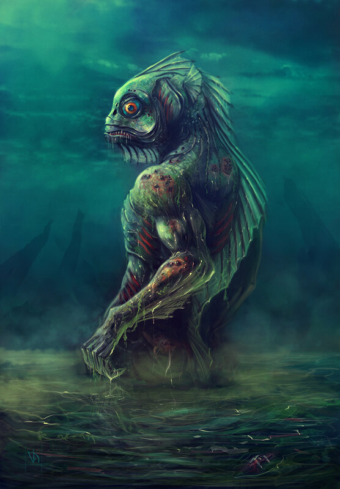

Наибольшим почетом среди разумных созданий подводного мира объяснимо пользуется божество, своим видом сильнее всего похожее на них самих. Отец Дагон являет собой нечто среднее между человеком, рыбой и амфибией, но при этом достигает гигантской высоты. Все его тело покрыто чешуей, на конечностях имеются перепонки, в пасти — острые зубы, на спине — плавники, однако при этом он способен ходить на двух нога Покровитель Глубоководных, Дагон с древних времен обитает в морских глубинах со своей спутницей Гидрой и почти не выходит на поверхность.
Увидеть удавалось мало кому из людей — это возможно лишь при редчайшем стечении обстоятельств. Те же, кому это доводилось, испытывали такой ужас и такое потрясение, что вмиг лишались рассудка и не могли должным образом передать вид этого морского божества. А если бы могли — едва ли нашлись бы те, кто бы им поверил.
Тем не менее в прибрежных районах Земли проживает немало людей которые ему поклоняются. К примеру, достоин упоминания Эзотерический орден Дагона, служители которого сосредоточены в портовом городке Инсмут, что в штате Массачусетс. Его жители дважды в год — в Вальпургиеву ночь и в канун Дня всех святых — отдают Глубоководным, расе рыболюдей, с которыми у них заключен союз, определенное число своих юношей и девушек — во славу Отцу Дагону и Матери Гидре.
Впервые появляется в одном из наиболее ранних рассказов Г. Ф. Лавкрафта «Дагон» (Dagon, 1919).
Своё имя получил от филистимлянского бога рыб, имевшего вид получеловека-полурыбы.
